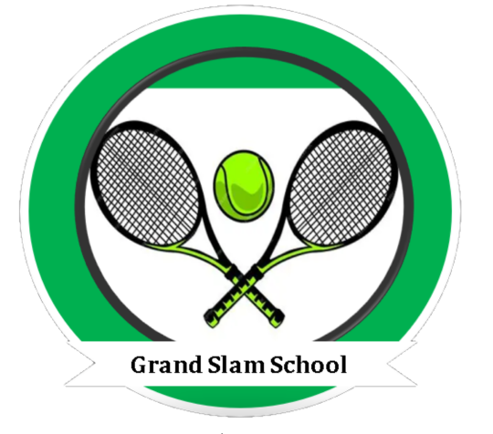
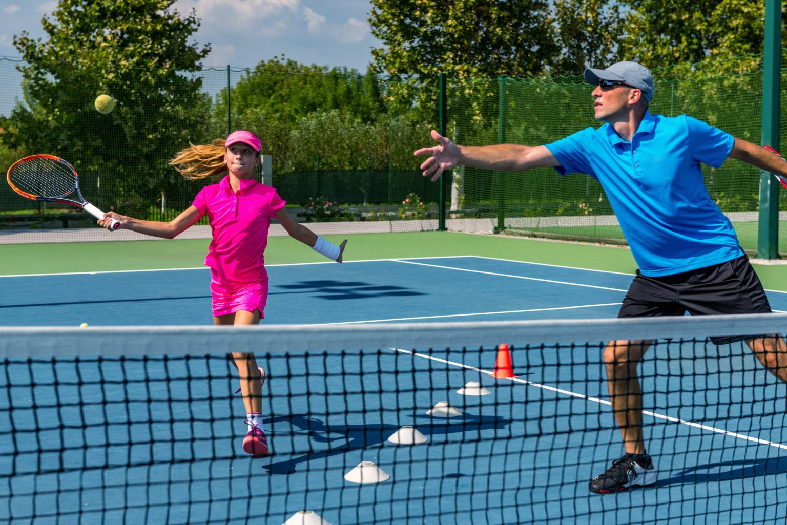
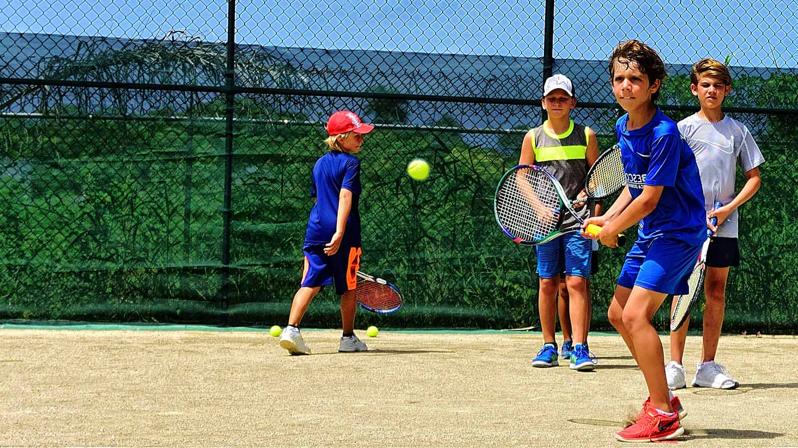
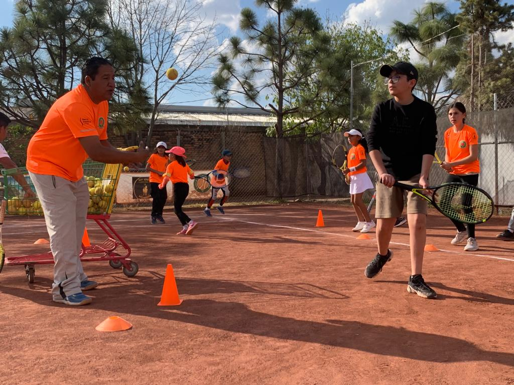
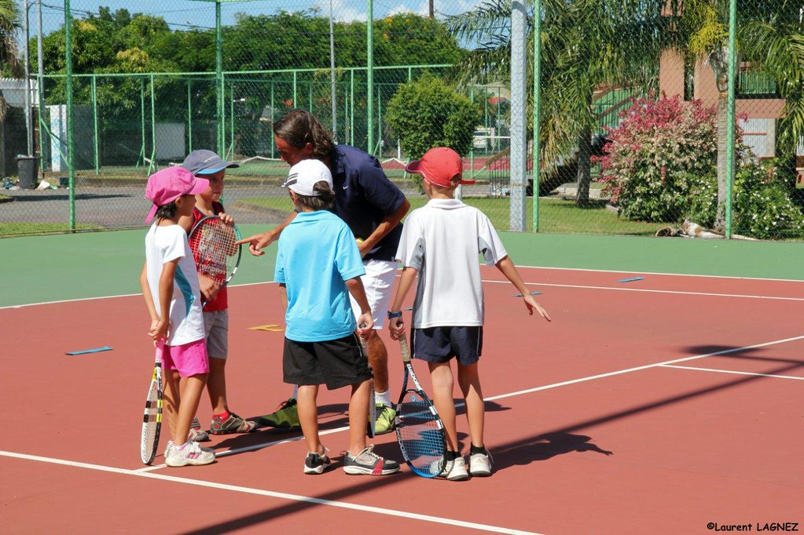
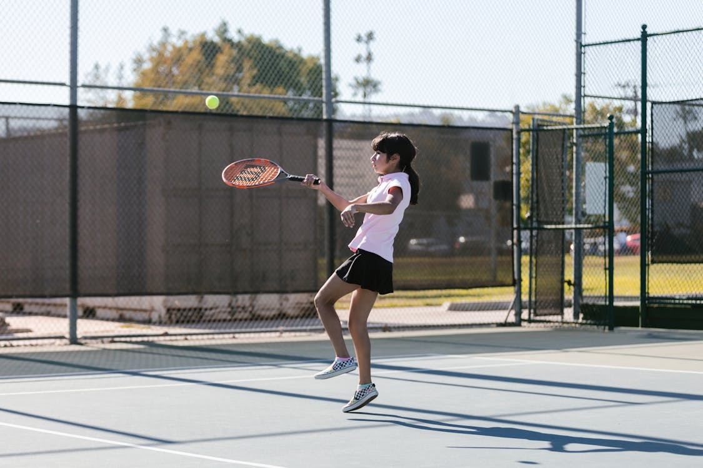

Desarrollamos habilidades, construimos campeones
En Grand Slam School cultivamos habilidades y valores que trascienden el deporte. "El tenis te forma, la vida te transforma" — excelencia y crecimiento integral.
Somos tu mejor opción
"En Grand Slam School creemos que el tenis es más que un deporte: es una escuela de vida. Cada entrenamiento es una oportunidad para crecer, aprender y superar tus propios límites."
Servicios destacados




